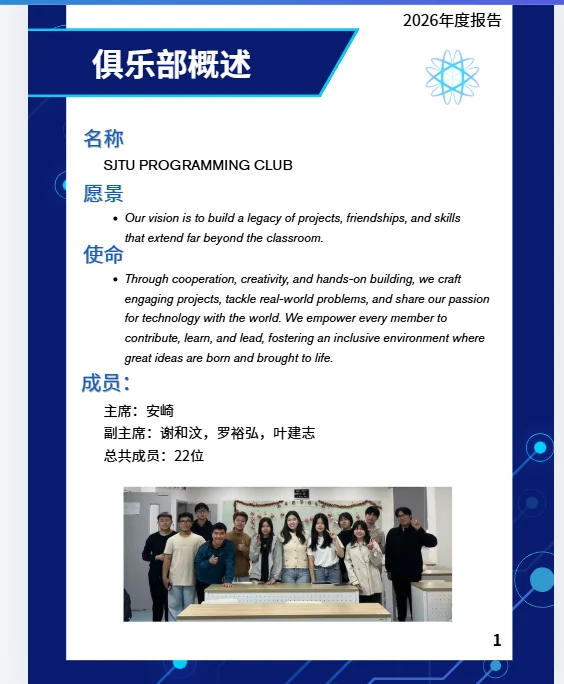
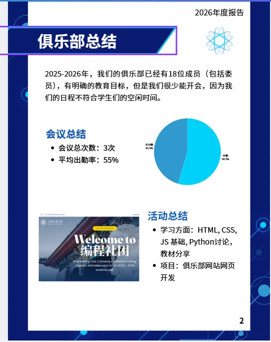
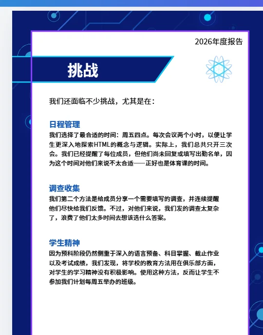
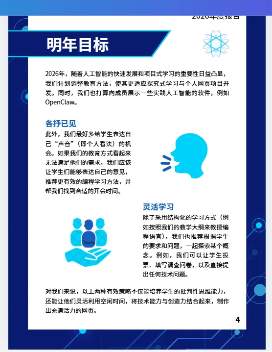
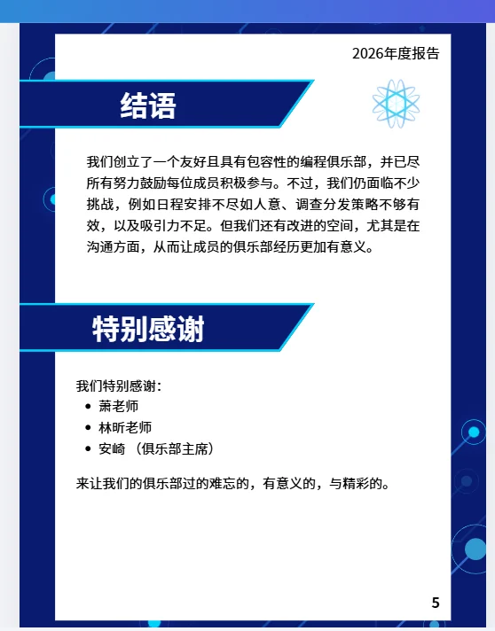

Annual report page 1
2026 ANNUAL REPORT
The evidence behind the final website.
Five supplied report pages document the club overview, annual summary, challenges, future goals, conclusion and acknowledgements.


Annual report page 2

Annual report page 3

Annual report page 4

Annual report page 5
REPORT-DERIVED FACTS
What the report actually supports.
The website separates report-derived information from later design decisions and external research.
Meetings
Three meetings were held, with a reported average attendance of 55%.
Learning and activity
HTML, CSS, JavaScript, Python discussion, material sharing and a club website project are listed.
Future direction
Project-based learning, practical AI tools, personal feedback and flexible participation are proposed.